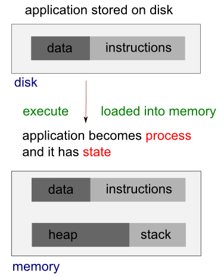

Multi-Threaded Programming
Terminology - 2017
More exactly it is Thread of Execution which is the smallest unit of processing.
- It is scheduled by an OS.
- In general, it is contained in a process. So, multiple threads can exist within the same process.
- It shares the resources with the process: The memory, code (instructions), and global variable (context - the values that its variables reference at any given moment).
- On a single processor, each thread has its turn by multiplexing based on time. On a multiple processor, each thread is running at the same time with each processor/core running a particular thread.
Need a break?
Martin Odersky talked on Parallel/Concurrent programming - Why it's so hard?
Is it inherent or incidental? Or both?
Martin Odersky's talk at OSCON 2011: Working Hard to Keep it Simple (slides)
Though this is more about Scala, it brings a whole different approach to parallelism / multithreading / concurrent computation.
Video recording - Producer and Consumer model using QSemaphore, for more info, please visit my Qt5 Tutorial:
QSemaphores - Producer and Consumer.
Application that has more than one thread of execution within the application itself is called multhreaded application.
For example, if we want to create a server that can serve as many concurrent connections as the the server can cope with, we can achieve such a task relatively easily if we devote a new thread to each connection. In some cases, instead of creating a separate socket to handle incoming connections, a multithreaded server creates a new thread for each incoming connection, and creates a new socket with each new thread.
Another typical example of the case when we need multithreading is GUI application. GUI applications have one thread of execution (Main Thread) and do one operation at a time. This thread is either waiting for an event or processing an event. So, if the user triggers a time-consuming operation from the user interface, the interface freezes while the operation is in progress. In this case, we need to implement multithreading.
The main thread can start new threads by creating objects of a Thread subclass. If multithreaded, the GUI runs in its own thread and additional processing takes place in other threads, and the application will have responsive GUIs even during intensive processing. In other words, we pass on the heavy-duty processing to separate secondary threads and leave the primary GUI thread free to respond to the user.
These new threads need to communicate among themselves so that application can keep the user informed of progress (keep the user interface up-to-date regarding the progress), allow the user to intervene (provide the user with some control over the secondary thread), and let the primary thread know when processing is complete. Typically, they use shared variables together by using a resource protection mechanism such as mutextes, semaphores, or wait conditions, etc.
Processes and threads are related to each other but are fundamentally different.
A process can be thought of as an instance of a running program. Each process is an independent entity to which system resources such as CPU time, memory, etc. are allocated and each process is executed in a separate address space. If we want to access another process' resources, inter-process communications have to be used such as pipes, files, sockets etc. See more on Linux process.
Process provides each program with two key abstractions:
- Logical control flow
Each process seems to have exclusive use of the CPU - Private virtual address space
Each process seems to have exclusive use of main memory

A thread uses the same address space of a process. A process can have multiple threads. A key difference between processes and threads is that multiple threads share parts of their state. Typically, multiple threads can read from and write to the same memory (no process can directly access the memory of another process). However, each thread still has its own stack of activation records and its own copy of CPU registers, including the stack pointer and the program counter, which together describe the state of the thread's execution.
A thread is a particular execution path of a process. When one thread modifies a process resource, the change is immediately visible to sibling threads.
- Processes are independent while thread is within a process.
- Processes have separate address spaces while threads share their address spaces.
- Processes communicate each other through inter-process communication.
- Processes carry considerable state (e.g., ready, running, waiting, or stopped) information, whereas multiple threads within a process share state as well as memory and other resources.
- Context switching between threads in the same process is typically faster than context switching between processes.
- Multithreading has some advantages over multiple processes. Threads require less overhead to manage than processes, and intraprocess thread communication is less expensive than interprocess communication.
- Multiple process concurrent programs do have one advantage: Each process can execute on a different machine (distribute program). Examples of distributed programs are file servers (NFS), file transfer clients and servers (FTP), remote log-in clients and servers (Telnet), groupware programs, and Web browsers and servers.
- Message Passing
- Message passing exchanges data via inter-process communication(IPC) mechanisms.
- Pros: Generalizes to both local & remote communication.
- Cons: May incur excess overhead for large messages in a "loop-back" configuration.
- Shared Memory
- Shared memory allows apps to access & exchange data as though they were local to address space of each process.
- Pros: Can be more efficient for large messages in loop-back configuration.
- Cons: Doesn't generalize efficiently to remote systems & can be more error-prone & non-portable for OO apps.
- Multiprocessing
- A process is the unit of resource allocation & protection.
- A process manages certain resources, e.g., virtual memory, I/O handlers, and signal handlers.
- Pros: Process is protected from other processes via an MMU.
- Cons: IPC between processes can be complicated and inefficient.
- Multithreading
- A thread is the unit of computation that runs in the context of a process.
- A thread manages certain resources, e.g., stack, registers, signal masks, priorities, and thread-specific data
- Pros: IPC between threads is more efficient that IPC between processes.
- Cons: Threads can interfere with each other.
In Linux systems, a kernel knows and controls everything of a running system but a process does not. A process is an instance of an executing program. When a program is executed, the kernel loads the code of the program into virtual memory, allocates space for program variables, and sets up kernel bookkeeping data structures to record various information (such as process ID, termination status, user IDs, and group IDs) about the process.
Process
- A running system typically has numerous processes.
- For a process, many things happen asynchronously.
- An executing process doesn't know when it will next time out, which other processes will then be scheduled for the CPU (and in what order), or when it will next be scheduled. The delivery of signals and the occurrence of interprocess communication events are mediated by the kernel, and can occur at any time for a process.
- Many things happen transparently for a process. A process doesn't know where it is located in RAM or, in general, whether a particular part of its memory space is currently resident in memory or held in the swap area (a reserved area of disk space used to supplement the computer's RAM).
- Similarly, a process doesn't know where on the disk drive the files it accesses are being held; it simply refers to the files by name.
- A process operates in isolation; it can't directly communicate with another process.
- A process can't itself create a new process or even end its own existence. Actually, a process can create a new process using the fork() system call. The process that calls fork() is referred to as the parent process, and the new process is referred to as the child process. The kernel creates the child process by making a duplicate of the parent process.
- Finally, a process can't communicate directly with the input and output devices attached to the computer.
Kernel
- The kernel facilitates the running of all processes on the system.
- The kernel decides which process will next obtain access to the CPU, when it will do so, and for how long.
- The kernel maintains data structures containing information about all running processes and updates these structures as processes are created, change state, and terminate.
- The kernel maintains all of the low-level data structures that enable the filenames used by programs to be translated into physical locations on the disk.
- The kernel also maintains data structures that map the virtual memory of each process into the physical memory of the computer and the swap area(s) on disk.
- All communication between processes is done via mechanisms provided by the kernel. In response to requests from processes, the kernel creates new processes and terminates existing processes.
- Lastly, the kernel (in particular, device drivers) performs all direct communication with input and output devices, transferring information to and from user processes as required.
Edited from "Process versus kernel views of the system" of "Linux Programming Interface"
- Preemptive
- Each Task has a priority relative to all other tasks
- The most critical Task is assigned the highest priority
- The highest priority Task that is ready to run gets control of the processor
- A Task runs until it yields, terminates, or blocks
- Each Task has its own memory stack
- Before a Task can run it must load its context from its memory stack (this can take many cycles)
- If a Task is preempted it must save its current state/context; this context is restored when the Task is given control of the processor
In this preemptive scheduling a thread (or a process) must be in one of the following four states:- Running - the task is in control of the CPU
- Ready - the task is not blocked and is ready to receive control of the CPU when the scheduling policy indicates it is the highest priority task in the system that is not blocked.
- Inactive - the task is blocked and requires initialization in order to become ready.
- Blocked - the task is waiting for something to happen or for a resource to become available.
- Round Robin
In this method, time slices are assigned to each process in equal portions and in circular order, handling all processes without priority (also known as cyclic executive). Round-robin scheduling is simple, easy to implement, and starvation-free.
For more info on RTOS, visit
Embedded Systems Programming: RTOS (real-time operating system)
The existence of this problem has been known for a while, however, there is no fool-proof method to predict the situation.
To ensure rapid response times, an embedded RTOS can use preemption (higher-priority task can interrupt a low-priority task that's running). When the high-priority task finishes running, the low-priority task resumes executing from the point at which it was interrupted.
Unfortunately, the need to share resources between tasks operating in a preemptive multitasking environment can create conflicts. Along with a deadlock, the priority inversion is one of the two of the most common problems which can result in application failure. (Mars Pathfinder mission)
The typical example is a medium priority task (M) preempts a high priority task, resulting in a priority inversion. A low priority process (L) acquiring a resource that a high priority process (H) wants to access, but being preempted by a medium priority process (M), so the high priority process (H) is blocked on the resource while the medium priority one (M) finishes. This can occur when any third task of medium priority (M) becomes runnable during low priority process' use of resource. Once high priority task becomes unrunnable, third task of medium priority (M) is the highest priority runnable task, thus it runs and while it does L cannot relinquish the resource. So in this scenario, the medium priority task (M) preempts the high priority task (H), resulting in a priority inversion.
Picture from How to use priority inheritance
To avoid priority inversion, the priority is set (hoisted) to a predefined priority higher than or equal to the highest priority of all the threads that might lock the particular mutex. This is known as Priority Ceiling.
When a task acquires a shared resource, the task is hoisted (has its priority temporarily raised) to the priority ceiling of that resource (This unconditional hoist is the different from the priority inheritance). The priority ceiling must be higher than the highest priority of all tasks that can access the resource to ensure that a task owning a shared resource won't be preempted by any other task attempting to access the same resource. When the hoisted task releases the resource, the task is returned to its original priority level.
An alternative to the priority ceiling is the priority inheritance, a variation that uses dynamic priority adjustments. When a low-priority task acquires a shared resource, the task continues running at its original priority level. If a higher-priority thread requests ownership of the shared resource, the low-priority task is hoisted to the priority level of the requesting thread (the higher-priority thread waiting for the mutex) by inheriting that priority. The low-priority task can then continue executing its critical section until it releases the resource. Once the resource is released, the task is dropped back to its original low-priority level, permitting the high-priority task to use the resource it has just acquired.
Because the majority of locks in real-time applications aren't contended, the priority inheritance protocol has good average-case performance. When a lock isn't contended, priorities don't change; there is no additional overhead.
Invariants is one of the widely used concepts to help programmers reason about their code. The invariants-statements that are always true about a particular data structure, such as linked list. These invariants are often broken during an update, especially if
- the data structure is of any complexity
- the update requires modification of more than one value.
Let's think about a doubly linked list, where each node holds a pointer to both the next node in the list and the previous one. One of the Invariants is that if we follow a next pointer from one node (1) to another (2), the previous pointer from that node (2) points back to the first node (1). In order to remove a node from the list, the nodes on either side have to be updated to point to each other. Once one has been updated, the invariant is broken until the node on the other side has been updated too. Only after all the updates necessary have completed, the invariant holds again. The steps in deleting an entry from such a list are:
- Identify the node to delete, n.
- Update the link from the node prior to n to point to the node after n.
- Update the link from the node after n to point to the node prior to n.
- Delete node n.
However, when the links going in one direction could become inconsistent with the links going in the opposite direction, and the invariant is broken.
Broken invariant is the simplest potential problem with modifying data shared between threads. If we don't do anything special to ensure otherwise, if one thread is reading the doubly linked list while another is removing a node, it's quite possible for the reading thread to see the list with a node only partially removed (because only one of the links has been changed), so the invariant is broken.
The consequences of this broken invariant can vary. If the other thread is just reading the list items from left to right, it will skip the node being deleted. On the other hand, if the second thread is trying to delete the rightmost node in the list, it might end up permanently corrupting the data structure and eventually crashing the program. Whatever the outcome, this is an example of one of the most common causes of bugs in concurrent code: a race condition.
This section is mostly from the book "C++ Concurrency in Action Practical Multithreading" by Anthony Williams.
We need to be clear about the difference between the fork() system call and the creation of new threads.
When a process executes a fork() call, a new copy of the process is created with its own variables and its own process id (PID), and this new process is scheduled independently, and executed almost independently of the parent process.
When we create a new thread within a process, on the other hand, the new thread gets its own stack (local variables) but shares global variables, file descriptors, signal handlers, and its current directory state with the process which created it.
- Multiprocessing
- Prespawn threads to amortize creation costs via eager spawning strategies.
- On-demand thread spawning
- Used to implement thread-per-request and thread-per-connection models.
- Pros: Reduces wasted resource consumption of unused prespawned threads.
- Cons: Can degrade performance in heavily loaded servers and determinism due to overhead of spawning threads and starting services.
- Faster on a multi-CPU system.
- Even in a single CPU system, application can remain responsive by using worker thread runs concurrently with the main thread.
So, multithreading is a good thing. How can we identify multithreading oppurtinities in codes?
- We need runtime profile data of our application. Then, we can identify the bottleneck of code.
- Eaxmine the region, and check for dependencies. Then, determine whether the dependencies can be broken into either
- multiple parallel task, or
- loop over multiple parallel iteration.
- At this stage, we may consider a different algorithm.
- We need to estimate the overhead and performance gains. Will it give us linear scaling with the number of thread?
- If the scaling does not look promising, we may have to broaden the scope of our analysis.
Switching the CPU from one process or thread to another is called context switch. It requires saving the state of the old process or thread and loading the state of the new one. Since there may be several hundred context switches per second, context switches can potentially add significant overhead to an execution.
Context switch is implemented using exception control flow. (for more exception control flow)
This section is mostly from the book "C++ Concurrency in Action Practical Multithreading" by Anthony Williams.
In concurrency, a race condition is anything where the outcome depends on the relative ordering of execution of operations on two or more threads where the threads race to perform their respective operations. Most of the time, this is quite benign because all possible outcomes are acceptable, even though they may change with different relative orderings. For example, if two threads are adding items to a queue for processing, it generally doesn't matter which item gets added first, provided that the invariants of the system are maintained.
It's when the race condition leads to broken invariants that there's a problem, such as with the doubly linked list example mentioned in Invariants section of this chapter.
When talking about concurrency, the term race condition is usually used to mean a problematic race condition; benign race condition is not so interesting and should not be a cause of bugs. The C++ Standard also defines the term data race to mean the specific type of race condition that arises because of concurrent modification to a single object such that data races cause the undefined behavior.
This happens when a critical section is not executed atomically.
An execution of threads depends on shared state. For example, two threads share variable i and trying to increment it by 1.
It is highly dependent on when they get it and when they save it.
Typically, problematic race conditions occur where completing an operation requires modification of two or more distinct pieces of data, such as the two link pointers in the example of Invariants section. Because the operation must access two separate pieces of data, these must be modified in separate instructions, and another thread could potentially access the data structure when only one of them has been completed.
Race conditions can often be hard to find and hard to duplicate because the window of opportunity is small. If the modifications are done as consecutive CPU instructions, the chance of the problem exhibiting on any one run-through is very small, even if the data structure is being accessed by another thread concurrently. As the load on the system increases, and the number of times the operation is performed increases, the chance of the problematic execution sequence occurring also increases. It's almost inevitable that such problems will show up at the most inconvenient time.
Because race conditions are generally timing sensitive, they can often disappear entirely when the application is run under the debugger, because the debugger affects the timing of the program, even if only slightly.
If we are writing multithreaded programs, race conditions can easily be the bane of our life. A great deal of the complexity in writing software that uses concurrency comes from avoiding problematic race conditions.
There are several ways to deal with problematic race conditions. The simplest option is to wrap your data structure with a protection mechanism, to ensure that only the thread actually performing a modification can see the intermediate states where the invariants are broken. From the point of view of other threads accessing that data structure, such modifications either haven't started or have completed.
Another option is to modify the design of your data structure and its invariants so that modifications are done as a series of indivisible changes, each of which preserves the invariants. This is generally referred to as lock-free programming and is difficult to get right. If we're working at this level, the nuances of the memory model and identifying which threads can potentially see which set of values can get complicated.
Another way of dealing with race conditions is to handle the updates to the data structure as a transaction, just as updates to a database are done within a transaction. The required series of data modifications and reads is stored in a transaction log and then committed in a single step. If the commit can't proceed because the data structure has been modified by another thread, the transaction is restarted. This is termed software transactional memory (STM), and currently, it's an active research area.
The most basic mechanism for protecting shared data is probably the mutex.
Suppose, two person A and B share the same account and try to deposit roughly at the same time. In the following example, they deposited 1$ million times. So, we expect the balance would be $2,000,000. However, it turns out that's not the case as we see from the output:
// global1.c
#include <stdio.h>
#include <pthread.h>
static volatile int balance = 0;
void *deposit(void *param)
{
char *who = param;
int i;
printf("%s: begin\n", who);
for (i = 0; i < 1000000; i++) {
balance = balance + 1;
}
printf("%s: done\n", who);
return NULL;
}
int main()
{
pthread_t p1, p2;
printf("main() starts depositing, balance = %d\n", balance);
pthread_create(&p1;, NULL, deposit, "A");
pthread_create(&p2;, NULL, deposit, "B");
// join waits for the threads to finish
pthread_join(p1, NULL);
pthread_join(p2, NULL);
printf("main() A and B finished, balance = %d\n", balance);
return 0;
}
Output:
$ ./global main() starts depositing, balance = 0 B: begin A: begin B: done A: done main() A and B finished, balance = 1270850 ---- $ ./global main() starts depositing, balance = 0 B: begin A: begin B: done A: done main() A and B finished, balance = 1423705
Note that both threads accessing the same function and share global variable balance.
Put simply, what could happened is this: the code to increment balance has been run twice by A and B, in both cases, however, the balance might started at 0 without noticing the other person was in the process of putting money into the same account.
Technically, the deposit process may not be just one instruction, it may have three-instruction sequences as below:
(1) // the variable balance is located at address 0x8049a1c // mov instruction is used first to get the memory value at the address // and put it into register eax mov 0x8049a1c, %eax (2) // the add is performed, adding 1 (0x1) to the contents of the eax register add $0x1, %eax (3) // the contents of eax are stored back into memory at the same address. mov %eax, 0x8049a1c
We need to make the balance updating code (critical section) as atomic:
// global2.c
#include <stdio.h>
#include <pthread.h>
static volatile int balance = 0;
pthread_mutex_t myMutex;
void *deposit(void *param)
{
char *who = param;
int i;
printf("%s: begin\n", who);
for (i = 0; i < 1000000; i++) {
// critical section
pthread_mutex_lock(&myMutex;);
balance = balance + 1;
pthread_mutex_unlock(&myMutex;);
}
printf("%s: done\n", who);
return NULL;
}
int main()
{
pthread_t p1, p2;
printf("main() starts depositing, balance = %d\n", balance);
pthread_mutex_init(&myMutex;,0);
pthread_create(&p1;, NULL, deposit, "A");
pthread_create(&p2;, NULL, deposit, "B");
// join waits for the threads to finish
pthread_join(p1, NULL);
pthread_join(p2, NULL);
pthread_mutex_destroy(&myMutex;);
printf("main() A and B finished, balance = %d\n", balance);
return 0;
}
Makefile:
global2: global2.o
gcc -D_REENTRANT -o global2 global2.o -Wall -lpthread
global2.o: global2.c
gcc -c global2.c
clean:
rm -f *.o global2
Now, our output looks desirable:
$ make gcc -c global2.c gcc -D_REENTRANT -o global2 global2.o -Wall -lpthread $ ./global2 main() starts depositing, balance = 0 B: begin A: begin B: done A: done main() A and B finished, balance = 2000000
We can detect the potential race condition using valgrind --tool=helgrind program_name. Visit Multithread Debugging.
Two or more competing actions are waiting for other to finish. No threads are changing their states.
In other words, deadlock occurs when some threads are blocked to acquire resources held by other blocked threads. A deadlock may arise due to dependence between two or more threads that request resources and two or more threads that hold those resources.
Example 1: Alphonse and Gaston are friends, and great believers in courtesy. A strict rule of courtesy is that when you bow to a friend, you must remain bowed until your friend has a chance to return the bow. Unfortunately, this rule does not account for the possibility that two friends might bow to each other at the same time.
Example 2: Two threads want to acquire mutex locks A and B to finish their task. Suppose thread 1 has already acquired lock A and thread 2 has already acquired B. Then, thread 1 cannot make progress because it is waiting for lock B, and thread 2 cannot make progress because it is waiting for lock A. So, the two thread are in deadlock.
How to avoid deadlock
- Don't request another resource while holding one resource.
- If you ever need to acquire two locks at once acquire locks in a fixed order.
- Don't wait for another thread if there's a chance it's waiting for you.
- Try to avoid holding locks for longer than we need to.
How to avoid deadlock - Producer/Consumer Problem
Starting from a very simple example, it provides a solution for producer/consumer ((aka Bounded Buffer) problem using mutex(binary semaphore). It has the dead lock case as well, and solves it by reducing the scope of lock.
A situation that process is not progressing. Example: When two people meet at narrow path, and both of them are repeatedly trying to yield to the other person. Both are changing their states but with no progress.
A thread often acts in response to the action of another thread. If the other thread's action is also a response to the action of another thread, then livelock may result. As with deadlock, livelocked threads are unable to make further progress. However, the threads are not blocked - they are simply too busy responding to each other to resume work.
In the following example, the code was written in an attempt to avoid deadlock, however, if the two threads executed at the same time, they will be trapped in a livelock of constantly acquiring and releasing mutexes. It is very unlikely that either will make progress. Each thread acquires a lock and then attempts to acquire the other lock. If it fails to acquire the other lock, it releases the lock it is holding before another try to get both locks again. The thread exits the loop when it manages to acquire both locks, and it may happen, but until then, the application will make no progress:
When a process having been denied necessary resources. Without the resources the program can not finish.
Example: An object provides a synchronized method that often takes a long time to return. If one thread invokes this method frequently, other threads that also need frequent synchronized access to the same object will often be blocked.
From MSDN: Thread-Safe Components
Although using locks will guarantee that multiple threads do not simultaneously access an object, they can cause significant performance degradation . Imagine a program with many different threads running. If each thread needs to use a particular object and has to wait to obtain an exclusive lock on that object before executing, the threads will all cease executing and back up behind one another, causing poor performance. For these reasons, we should only use locks when we have code that must be executed as a unit. For example, we might update multiple resources that were interdependent. Such code is said to be atomic. Restricting our locks only to code that must be executed atomically will allow us to write multithreaded components that ensure the safety of our data while still maintaining good performance.
We must also be careful to avoid situations where deadlocks might occur. In this case, multiple threads wait for each other to release shared resources. For example, Thread 1 might hold a lock on resource A and is waiting for resource B. Thread 2, on the other hand, might have a lock on resource B and awaits resource A. In such a case, neither thread will be allowed to proceed. The only way to avoid deadlock situations is through careful programming.
The dining philosophers problem is summarized as five philosophers sitting at a table doing one of two things: eating or thinking. While eating, they are not thinking, and while thinking, they are not eating. The five philosophers sit at a circular table with a large bowl of spaghetti in the center. A fork is placed in between each pair of adjacent philosophers, and as such, each philosopher has one fork to his left and one fork to his right. As spaghetti is difficult to serve and eat with a single fork, it is assumed that a philosopher must eat with two forks. Each philosopher can only use the forks on his immediate left and immediate right.

source wiki
The philosophers never speak to each other, which creates a dangerous possibility of deadlock when every philosopher holds a left fork and waits perpetually for a right fork (or vice versa).
Originally used as a means of illustrating the problem of deadlock, this system reaches deadlock when there is a 'cycle of unwarranted requests'. In this case philosopher P1 waits for the fork grabbed by philosopher P2 who is waiting for the fork of philosopher P3 and so forth, making a circular chain.
Starvation (and the pun was intended in the original problem description) might also occur independently of deadlock if a philosopher is unable to acquire both forks because of a timing problem. For example there might be a rule that the philosophers put down a fork after waiting five minutes for the other fork to become available and wait a further five minutes before making their next attempt. This scheme eliminates the possibility of deadlock (the system can always advance to a different state) but still suffers from the problem of livelock. If all five philosophers appear in the dining room at exactly the same time and each picks up the left fork at the same time the philosophers will wait five minutes until they all put their forks down and then wait a further five minutes before they all pick them up again.
In general the dining philosophers problem is a generic and abstract problem used for explaining various issues which arise in problems which hold mutual exclusion as a core idea. The various kinds of failures these philosophers may experience are analogous to the difficulties that arise in real computer programming when multiple programs need exclusive access to shared resources. These issues are studied in the branch of Concurrent Programming. The original problems of Dijkstra were related to external devices like tape drives. However, the difficulties studied in the Dining Philosophers problem arise far more often when multiple processes access sets of data that are being updated. Systems that must deal with a large number of parallel processes, such as operating system kernels, use thousands of locks and synchronizations that require strict adherence to methods and protocols if such problems as deadlock, starvation, or data corruption are to be avoided.
we want to protect data from race conditions and the potential broken invariants that can ensue. It would be nice if we could mark all the pieces of code that access the data structure as mutually exclusive, so that if any thread was running one of them, any other thread that tried to access that data structure had to wait until the first thread was finished. That would make it impossible for a thread to see a broken invariants except when it was the thread doing the modification.
There are two types of synchronization:
- Mutual Exclusion
Mutual exclusion ensures that a group of atomic actions (critical section cannot be executed by more than one thread at a time).
Before accessing a shared data structure, we lock the mutex associated with that data, and when we've finished accessing the data structure, we unlock the mutex. Then ensures that once one thread has locked a specific mutex, all other threads that try to lock the same mutex have to wait until the thread that successfully locked the mutex unlocks it.
This ensures that all threads see a self-consistent view of the shared data, without any broken invariants.
Though mutexes are the most general of the data-protection mechanisms, it's important to structure our code to protect the right data and avoid race conditions inherent in our interfaces.
Mutexes also come with their own problems, in the form of a deadlock and protecting either too much or too little data. - Condition Synchronization
A condition variable provides a different type of synchronization than a mutex, readers/writer, or semaphore lock. While the latter three mechanisms make other threads wait while the thread holding the lock executes code in a critical section, a condition variable allows to coordinate and schedule its own processing (note: semaphore can be used condition sync by signaling the condition to other threads).
This ensures that the state of a program satisfies a particular condition before some action occurs. For example, in the bank account problem, there is a need for both condition synchronization and mutual exclusion. The balance must not be in an empty condition before method withdraw() is executed, and mutual exclusion is required for ensuring that the withdraw not be executed more than once.
It is used to avoid simultaneous use of resources such as global variables by the critical sections. A Critical section is a piece of code where a process or thread accesses a common resource.
Mutex locks ensure that only one thread has access to a resource at a time. If the lock is held by another thread, the thread attempting to acquire the lock will sleep until the lock is released. A timeout can also be specified so that lock acquisition will fail if the lock does not become available within the specified interval. One problem with this approach is that it can serialize a program. This causes the multithreaded program to have only a single executing thread, which stops the program from taking advantage of multiple cores.
If multiple threads are waiting for the lock, the order in which the waiting threads will acquire the mutex is not guaranteed. Mutexes can be shared between processes. In comparison, critical sections cannot be shared between processes; consequently, performance overhead of critical sections is lower.
Spin locks are essentially mutex locks.
A spin lock polls its lock condition repeatedly until that condition becomes true. Spin locks are most often used on multiprocessor systems where the expected wait time for a lock is small. In these situations, it is often more efficient to poll than to block the thread, which involves a Context switch and the updating of thread data structures.
The difference between a mutex lock and a spin lock is that a thread waiting to acquire a spin lock will keep trying to acquire the lock without sleeping and consuming processor resources until it finally acquires the lock. On the contrary, a mutex lock may sleep if it is unable to acquire the lock. But under normal mutex implementation, multex locks will immediately put a thread to sleep when it cannot get the mutex.
The advantage of using spin locks is that they will acquire the lock as soon as it is released, while a mutex lock will need to be woken by the OS before it can get the lock. The disadvantage is that a spin lock will spin on a virtual CPU monopolizing that resource, but a mutex lock will sleep and free the CPU for another thread to use. So, in practice, mutex locks are often implemented to be a hybrid of a spin locks and more traditional mutex locks. This kind of mutx is called adaptive mutex lock.
For example code, please visit PThread: Spin Locks.
Most language-level mutex implementations rely on machine-level support such as http://en.wikipedia.org/wiki/Test-and-set.
A code segment that accesses shared variable (or other shared resources) and that has to be executed as an atomic action is referred to as a critical section. Depending on the OS, usually OS provides several atomic versions of the compare-and-swap, test-and-set, and test-and-clear operations.
while (true) {
entry-section
critical section //accesses shared variables
exit-section
noncritical section
}
The entry- and exit-sections that surround a critical section must satisfy the following correctness requirements:
- Mutual exclusion
When a thread is executing in its critical section, no other threads can be executing in their critical sections. - Progress
If no thread is executing in its critical section and there are threads that wish to enter their critical sections, only the threads that are executing in their entry- or exit-sections can participate in the decision about which thread will enter its critical section next, and this decision cannot be postponed indefinitely. - Bounded waiting
After a thread makes a request to enter its critical section, there is a bound on the number of times that other threads are allowed to enter their critical sections before this thread's request is granted.
Critical sections are similar to mutex locks. The difference is that critical sections cannot be shared between processes. Therefore, their performance overhead is lower. Critical sections also have a different interface from that provided by mutex locks. Critical sections do not take a timeout value but do have an interface that allows the calling thread to try to enter the critical section. If this fails, the call immediately returns, enabling the thread to continue execution. They also have the facility of spinning for a number of iterations before the thread goes to sleep in the situation where the thread is unable to enter the critical section.
Slim reader/writer locks provide support for the situation where there are multiple threads that read shared data, but on rare occasions the shared data needs to be written. Data that is being read can be simultaneously accessed by multiple threads without concern for problems with corruption of the data being shared. However, only a single thread can have access to update the data at any one time, and other threads cannot access that data during the write operation. This is to prevent threads from reading incomplete or corrupted data that is in the process of being written. Slim reader/write locks cannot be shared across processes.
Semaphores are counters that can be either incremented or decremented. They can be used in situations where there is a finite limit to a resource and a mechanism is needed to impose that limit. An example is a buffer that has a fixed size. Whenever an element is added to a buffer, the number of available positions is decreased. Every time an element is removed, the number available is increased.
A thread blocks when it tries to decrement a semaphore whose value equals 0. A blocked thread will be released only after another thread posts the semaphore, causing its count to become greater than 0. Semaphores retain state to keep track of the count and the number of blocked threads. They are often implemented using sleep locks, which trigger a context switch that allows other threads to execute. Unlike mutexes, they need not be released by the same thread that acquired them initially. This capability allows semaphores to be used in a broader range of execution contexts, such as signal/interrupt handlers.
Semaphores can also be used to mimic mutexes. If there is only one element in the semaphore, then it can be either acquired or available, exactly as a mutex can be either locked or unlocked.
Semaphores will also signal or wake up threads that are waiting on them to use available resources. So, they can be used for signaling between threads.
Semaphores are used to provide mutual exclusion and condition synchronization.
It is a variable either a binary semaphore (true or false) or a counter (counting) semaphore. Semaphore is used to prevent race condition. Semaphores provide a means of restricting access to a finite set of resources or of signaling that a resource is available. As in the case with mutex locks, semaphores can be shared across processes.
- Counting Semaphore
A counting semaphore is a synchronization object that is initialized with an integer value and then accessed through two operations, named P and V, meaning down, up or decrement, increment, wait, signal, respectively (Dijkstra).class countingSemaphore { public: countingSemaphore(int initialPermits) { permits = initialPermits; } void P() {} void V() {} private: int permits; }; void countingSemaphore::P() { if(permits > 0) --permits; // take a permit from the pool else // the pool is empty so wait for a permit wait until permits becomes positive and the decrement permits by one. } void CountingSemaphore::V() { ++permits; // return a permit to the pool }It is helpful to interpret a counting semaphore as having a pool of permits. A thread calls method P() to request a permit. If the pool is empty, the thread waits until a permit becomes available. A thread calls method V() to return a permit to the pool. A counting semaphore s is declared and initialized usingcountingSemaphore s(1);
The initial value, in this case 1, represents the initial number of permits in the pool. For a counting semaphore s, at any time, the following relation holds:(the initial number of permits) + (the number of completed s.V() operations) >= (the number of completed s.P() operations
This relation is referred to as the invariant for semaphore s. Counting semaphore rely on a semaphore invariant to define its behavior. - Binary Semaphore
A semaphore named mutex is initialized with the value of 1. The calls to mutex.P() and mutex.V() create a critical section:Thread1 Thread2 ---------------------------------- mutex.P(); mutex.P(); /*critial section*/ /*critical section*/ mutex.V(); mutex.V();
Due to the initial value 1 for mutex and the placement of mutex.P() and mutex.V() around the critical section, a mutex.P() operation will be completed first, then mutex.V(), and so on. For this pattern, we can let mutex be a counting semaphore, or we can use a more restrictive type of semaphore called a binary semaphore.
Semephore is another generaliztion of mutexes, and semaphores can be used to guard a certain number of identical resources. A mutex (binary semaphore) allows only the thread that locks it to have access to the protected resource. Semaphore can be signalled by any of the thread by using sem_post() for pThread but a mutex can be unlocked only by the thread which owns it.
| Semaphore semaphore(1); | Mutext mutex; |
| semaphore.acquire(); | mutex.lock(); |
| semaphore.release(); | mutex.unlock(); |
We pass 1 to the semaphore constructor, and tell the semaphore that it controls a single resource. Obviously, this is the advantage of using a semaphore because we can pass numbers other than 1 to the constructor, and then call acquire() multiple times to acquire many resources.
A mutex is essentially the same thing as a binary semaphore and sometimes uses the same basic implementation. The differences between them are (wiki):
- Mutexes have a concept of an owner, which is the process that locked the mutex. Only the process that locked the mutex can unlock it. In contrast, a semaphore has no concept of an owner. Any process can unlock a semaphore.
- Unlike semaphores, mutexes provide priority inversion safety. Since the mutex knows its current owner, it is possible to promote the priority of the owner whenever a higher-priority task starts waiting on the mutex.
- Mutexes also provide deletion safety, where the process holding the mutex cannot be accidentally deleted. Semaphores do not provide this.
Semaphores were defined before the introduction of programming concepts such as data encapsulation and information hiding. In semaphore-based programs, shared variables and the semaphores that protect them are global variables. This causes shared variable and semaphore operations to be distributed throughout the program.
Since P and V operations are used for both mutual exclusion and condition synchronization, it is difficult to determine how a semaphore is being used without examining all the code.
Monitors were invented to overcome these problems.
A monitor encapsulates shared data, all the operations on the data, and any synchronization required for accessing the data. A monitor has separate constructs for mutual exclusion and condition synchronization. In fact, mutual exclusion is provided automatically by the monitor's implementation, freeing the programmer from the burden of implementing critical sections.
In order to avoid data corruption and other problems, applications must control how threads access to shared resources. It is referred to as thread synchronization. The fundamental thread synchronization constructs are monitors and semaphores. Which one should we use? It depends on what the system or language supports.
- A monitor is a set of routines that are protected by a mutual exclusion lock. A thread cannot execute any of the routines in the monitor until it acquires the lock, which means that only one thread at a time can execute within the monitor. All other threads must wait for the currently executing thread to release the lock. A thread can suspend itself in the monitor and wait for an event to occur, in which case another thread is given the chance to enter the monitor. At some point the suspended thread is notified that the event has occurred, allowing it to awake and reacquire the lock as soon as possible.
- A semaphore is a simpler construct, just a lock that protects a shared resource. Before using a shared resource, the application must acquire the lock. Any other thread that tries to use the resource is blocked until the owning thread releases the lock, at which point one of the waiting threads acquires the lock and is unblocked. This is the most basic kind of semaphore, a mutual exclusion, or mutex, semaphore. There are other semaphore types, such as counting semaphores (which let a maximum of n threads access a resource at any given time) and event semaphores (which notify one or all waiting threads that en event has occurred), but they all work in much the same way.
Monitors and semaphores are equivalent, but monitors are simpler to use because they handle all details of lock acquisition and release. When using semaphores, an application must be very careful to release any locks a thread has acquired when it terminates. Otherwise, no other thread that needs the shared resource can proceed. In addition, every routine that accesses the shared resource must explicitly acquire a lock before using the resource, something that is easily forgotten when coding. Monitors always and automatically acquire the necessary locks.
A memory barrier is a type of nonblocking synchronization tool used to ensure that memory operations occur in the correct order. A memory barrier acts like a fence, forcing the processor to complete any load and store operations positioned in front of the barrier before it is allowed to perform load and store operations positioned after the barrier.
Memory barriers are typically used to ensure that memory operations by one thread always occur in an expected order. The lack of a memory barrier in such a situation might allow other threads to see seemingly impossible results. To employ a memory barrier, we simply call the memory barrier function (acquire_memory_barrier()/release_memory_barrier(), etc) at the appropriate point in our code.
Volatile variables apply another type of memory constraint to individual variables. The compiler often optimizes code by loading the values for variables into registers. For local variables, this is usually not a problem. If the variable is visible from another thread however, such an optimization might prevent the other thread from noticing any changes to it.
Applying the volatile keyword to a variable forces the compiler to load that variable from memory each time it is used. We may declare a variable as volatile if its value could be changed at any time by an external source that the compiler may not be able to detect.
However, like the memory barriers, because the volatile variables limits the compiler performance of optimizations, it should be used sparingly and only where needed to ensure correctness.
If we are already using a mutex to protect a section of code, do not automatically assume we need to use the volatile keyword to protect important variables inside that section. A mutex includes a memory barrier to ensure the proper ordering of load and store operations. Adding the volatile keyword to a variable within a critical section forces the value to be loaded from memory each time it is accessed. The combination of the two synchronization techniques may be necessary in specific cases but also leads to a significant performance penalty. If the mutex alone is enough to protect the variable, omit the volatile keyword.
It is also important that we do not use volatile variables in an attempt to avoid the use of mutexes. In general, mutexes and other synchronization mechanisms are a better way to protect the integrity of our data structures than volatile variables. The volatile keyword only ensures that a variable is loaded from memory rather than stored in a register. The volatile keyword does not ensure that the variable is accessed correctly by our code.
For more info, please visit volatile keywords.
A code is thread safe if it functions correctly in concurrent executions by multiple threads.
We can say a function is thread safe when it can safely be called from different threads simultaneously. The result is always defined if two thread safe functions are called concurrently. A class is thread safe when all of its functions can be called from different threads simultaneously without inferring with each other, even when operating on the same object.
To check if a piece of code is safe:
- When it accesses global variable.
- Alloc/realloc/freeing resources of global scope.
- Indirect access through handles or pointers.
To achieve a thread safety.
- Atomic operations - available runtime library (machine language instructions).
- Mutex
- Using Re-entrancy.
A code is re-entrant if it can be safely called again. In other words, re-entrant code can be called more than once, even though called by different threads, it still works correctly. So, the re-entrant section of code usually use local variables only in such a way that each and every call to the code gets its own unique copy of data.
Re-entrant methods are more constrained than thread-safe methods. This is because it is safe to call re-entrant methods simultaneously from multiple threads only if each invocation results only in unique data being accessed, such as local variables.
- Non-entrant code:
int g_var = 1; int f(){ g_var = g_var + 2; return g_var; } int g(){ return f() + 2; }If two concurrent threads access g_var, the result depends on the time of execution of each thread.
-
Re-entrant code:
int f(int i) { return i + 2; } int g(int i) { return f(i) + 2; }
This section is borrowed from Threading Programming Guide.
When it comes to threaded applications, nothing causes more fear or confusion than the issue of handling signals. Signals are a low-level BSD mechanism that can be used to deliver information to a process or manipulate it in some way. Some programs use signals to detect certain events, such as the death of a child process. The system uses signals to terminate runaway processes and communicate other types of information.
The problem with signals is not what they do, but their behavior when our application has multiple threads. In a single-threaded application, all signal handlers run on the main thread. In a multithreaded application, signals that are not tied to a specific hardware error (such as an illegal instruction) are delivered to whichever thread happens to be running at the time. If multiple threads are running simultaneously, the signal is delivered to whichever one the system happens to pick. In other words, signals can be delivered to any thread of our application.
The first rule for implementing signal handlers in applications is to avoid assumptions about which thread is handling the signal. If a specific thread wants to handle a given signal, we need to work out some way of notifying that thread when the signal arrives. We cannot just assume that installation of a signal handler from that thread will result in the signal being delivered to the same thread.
An atomic operation is one that will either successfully complete or fail. It is not possible for the operation to either result in a bad value or allow other threads on the system to have a transient value. An example of this would be an atomic increment, which would mean that the calling thread would swap n with n+1. This may look trivial, but the operation can involve several steps:
Load initial value to register Increment the value Store the new value back to memory
So, during the three steps, another thread could have come in and interfered, and replaced the value with a new one, creating a data race.
Typically, hardware provides support for a range of atomic operations. Atomic operations are often used to enable the writing of lock-free code. A lock-free implementation would not rely on a mutex lock to protect access. Instead, it would use a sequence of operations that would perform the operation without having to acquire an explicit lock. This can be higher performance than controlling access with a lock.
A thread can execute a thread join to wait until the other thread terminates.
Let's think about the following scenario. You are preparing for tomorrow's presentation with your colleague. As a primary member of your team, you need to continue working while the other team member going out and bring a lunch for you. In this case, you are the main thread and your colleague is a child thread, and both you and your colleague are doing their job concurrently (i.e., working and bring a lunch bag). Now, we have two cases to consider. First, your colleague brings your lunch and terminates while you are working. In this case, you can stop working and enjoy the lunch. Second, you finish your work early and take a nap before the lunch is available. Of course, you cannot fall into a deep sleep; otherwise, you won't have a chance to eat the lunch. What you are going to do is to wait until your colleague brings the lunch back.
Thread join is designed to solve this problem. A thread can execute a thread join to wait until the other thread terminates. In our case, you - the main thread - should execute a thread join waiting for your colleague - a child thread - to terminate. In general, thread join is for a parent (P) to join with one of its child threads (C). Thread join has the following activities, assuming that a parent thread P wants to join with one of its child threads C:
- When P executes a thread join in order to join with C, which is still running, P is suspended until C terminates. Once C terminates, P resumes.
- When P executes a thread join and C has already terminated, P continues as if no such thread join has ever executed (i.e., join has no effect).
A parent thread may join with many child threads created by the parent. Or, a parent only join with some of its child threads, and ignore other child threads. In this case, those child threads that are ignored by the parent will be terminated when the parent terminates.
In this section, I'll limit my writing to linux systems.
Theoretically, to come up with the possible number of threads available on our machine, we can use the stack size and size of the virtual space (swap):
swap/stack
So, if a machine of 20GB swap size and default stack size (we can use "ulimit -s" to check it) of 10MB, we can have 2,000 threads. However, we will have performance hit well before it.
Though there are some debates on scalability of threads with the performance, the rule of thumb may be the number of threads should match the number processors.
If we use cat /proc/cpuinfo on linux system, we will get the number of processors. That should be the optimum number of threads we should use.
processor : 0 vendor_id : GenuineIntel cpu family : 6 model : 26 model name : Intel(R) Xeon(R) CPU E5520 @ 2.27GHz stepping : 5 cpu MHz : 1596.000 cache size : 8192 KB physical id : 1 siblings : 8 core id : 0 cpu cores : 4 ..... ..... ..... processor : 15 vendor_id : GenuineIntel cpu family : 6 model : 26 model name : Intel(R) Xeon(R) CPU E5520 @ 2.27GHz stepping : 5 cpu MHz : 1596.000 cache size : 8192 KB physical id : 0 siblings : 8 core id : 3 cpu cores : 4 apicid : 7 fpu : yes fpu_exception : yes cpuid level : 11 wp : yes flags : fpu vme de pse tsc msr pae mce cx8 apic sep mtrr pge mca cmov pat pse36 clflush d ts acpi mmx fxsr sse sse2 ss ht tm syscall nx rdtscp lm constant_tsc ida pni monitor ds_cpl vmx est tm2 cx16 xtpr popcnt lahf_lm bogomips : 4522.03 clflush size : 64 cache_alignment : 64 address sizes : 40 bits physical, 48 bits virtual power management:
The important parameters are:
- processor : 0-15
- physical id : 0-1
- siblings : 8
- cpu cores : 4
The machine is using hyper-thread. We know this because the siblings (8) is double the number of cpu cores (4). If not hyper-thread, siblings should be equal to cpu cores. So, we have 8 processors (4 cores x hyperthread(2) = 8) for each cpu package (physical id = 0, 1), which give us 8 x 2 = 16 processors.
In Qt, QtCore.QThread.idealThreadCount() can be the proper inquiry function we can use to decide the number of threads we can use.
- OS scheduling ensures apps use host CPU/core resources appropriately.
- Modern OS platforms provide various models for scheduling threads.
- A key difference between the models is the contention scope in which threads compete for system resources, such as CPU time.
- System contention scope (kernel threading)
- Threads compete directly with other system scope threads regardless of what process they're in.
- 1:1 mapping between user and kernel threads.
- Pros:: Can leverage hardware parallelism effectively.
- Cons:: Higher thread creation and Context switching overhead.
- Process contention scope (user threading)
- Threads in the same process compete with each other though not directly with threads in other processes.
- N:1 mapping between user and kernel threads.
- Pros:: Lower thread creation and context switching overhead.
- Cons:: Can't leverage hardware parallelism effectively and has odd blocking semantics.
- System contention scope (kernel threading)
Multithreading mechanisms are provided by the OS to handle lifetime management, synchronization, properties, and thread-specific storage. The thread lifetime operations include operations to
- Create threads
- pthread_create() (PThreads)
- CreateThread() (WindowsO
- Terminate threads
- Voluntarily- by reaching the end point of the thread entry function
or calling pthread_exit()(PThreads) or ExitThread()(Windows). - Involuntarily- by being killed via a signal or an asynchronous thread cancellation operations
pthread_cancel()(PThreads) or TerminateThread()(Windows).
- Voluntarily- by reaching the end point of the thread entry function
- Thread synchronization operations that enable created threads to be
- Detached - where the OS reclaims storage used for the thread's state and exit status after it has exited.
- Joinable where the OS retains identity and exit status of a terminating thread so other threads can synchronize with it.
- Thread property operations include
operations to set and get thread properties, such as priority and scheduling class. - Thread-specific storage
This is similar to global data except that the data is only global in the scope of the executing thread. - (Note) Developing concurrent apps using native OS concurrency mechanisms can cause portability and reliability problems.
To connect to another machine, we need a socket connection. By the way, what's a connection? A relationship between two machines, where two pieces of software know about each other. Those two pieces of software know how to communicate with each other. In other words, they know how to send bits to each other.
A socket connection means the two machines have information about each other, including network location (IP address) and TCP port.
A socket is a resource assigned to the server process.
There are several different types of socket that determine the structure of the transport layer. The most common types are stream sockets and datagram sockets.
- Stream Sockets
Stream sockets provide reliable two-way communication similar to when we call someone on the phone. One side initiates the connection to the other, and after the connection is established, either side can communicate to the other.
In addition, there is immediate confirmation that what we said actually reached its destination.
Stream sockets use a Transmission Control Protocol (TCP), which exists on the transport layer of the Open Systems Interconnection (OSI) model. The data is usually transmitted in packets. TCP is designed so that the packets of data will arrive without errors and in sequence.
Webservers, mail servers, and their respective client applications all use TCP and stream socket to communicate. - Datagram Sockets
Communicating with a datagram socket is more like mailing a letter than making a phone call. The connection is one-way only and unreliable.
If we mail several letters, we can't be sure that they arrive in the same order, or even that they reached their destination at all. Datagram sockets use User Datagram Protocol (UDP). Actually, it's not a real connection, just a basic method for sending data from one point to another.
Datagram sockets and UDP are commonly used in networked games and streaming media.
Visit Socket program.
Bogotobogo's contents
To see more items, click left or right arrow.


Bogotobogo Image / Video Processing
Computer Vision & Machine Learning
with OpenCV, MATLAB, FFmpeg, and scikit-learn.

 object (Image Container)")
, ones(), eye() and clone()")


")


 - Fast Marching Methods")


 algorithm")


")
 by thresholding color")


 radial basis function kernel (RBF kernel)")
")
A TCP port is just a number. A 16-bit number that identifies a specific program on the server.
Our internet web (HTTP) server runs on port 80. If we've got a Telnet server, it's running on port 23. FTP on 20. SMTP 25.
They represent a logical connection to a particular piece of software running on the server. Without port number, the server would have no way of knowing which application a client wanted to connect to. When we write a server program, we'll include code that tells the program which port number we want it to run on.
The TCP port numbers from 0 to 1023 are reserved for well know services:
| Port Number | Description |
|---|---|
| 1 | TCP Port Service Multiplexer (TCPMUX) | 5 | Remote Job Entry (RJE) | 7 | ECHO | 18 | Message Send Protocol (MSP) | 20 | FTP -- Data | 21 | FTP -- Control | 22 | SSH Remote Login Protocol | 23 | Telnet | 25 | Simple Mail Transfer Protocol (SMTP) | 29 | MSG ICP | 37 | Time | 42 | Host Name Server (Nameserv) | 43 | WhoIs | 49 | Login Host Protocol (Login) | 53 | Domain Name System (DNS) | 69 | Trivial File Transfer Protocol (TFTP) | 70 | Gopher Services | 79 | Finger | 80 | HTTP | 103 | X.400 Standard | 108 | SNA Gateway Access Server | 109 | POP2 | 110 | POP3 | 115 | Simple File Transfer Protocol (SFTP) | 118 | SQL Services | 119 | Newsgroup NNTP | 137 | NetBIOS Name Service | 139 | NetBIOS Datagram Service | 143 | Interim Mail Access Protocol (IMAP) | 150 | NetBIOS Session Service | 156 | SQL Server | 161 | SNMP | 179 | Border Gateway Protocol (BGP) | 190 | Gateway Access Control Protocol (GACP) | 194 | Internet Relay Chat (IRC) | 197 | Directory Location Service (DLS) | 389 | Lightweight Directory Access Protocol (LDAP) | 396 | Novell Netware over IP | 443 | HTTPS | 444 | Simple Network Paging Protocol (SNPP) | 445 | Microsoft-DS | 458 | Apple QuickTime | 546 | DHCP Client | 547 | DHCP Server | 563 | SNEWS | 569 | MSN | 1080 | Socks |
TCP/IP stack operating on two hosts connected via two routers and the corresponding layers used at each hop

Encapsulation of application data descending through the protocol stack.
image source wiki
What's the difference between TCP and UDP?
- TCP (Transmission Control Protocol)
TCP is a connection-oriented protocol. A connection can be made from client to server, and from then on any data can be sent along that connection.- Reliable
When we send a message along a TCP socket, we know it will get there unless the connection fails completely. If it gets lost along the way, the server will re-request the lost part. This means complete integrity. In other words, the data will not get corrupted. - Ordered
If we send two messages along a connection, one after the other, we know the first message will get there first. We don't have to worry about data arriving in the wrong order. - Heavyweight
When the low level parts of the TCP stream arrive in the wrong order, resend requests have to be sent. All the out of sequence parts must be put back together, which requires a bit of work.
- Reliable
- UDP (User Datagram Protocol)
UDP is connectionless protocol. With UDP we send messages (packets) across the network in chunks.- Unreliable
When we send a message, we don't know if it'll get there. It could get lost on the way. - Not ordered
If we send two messages out, we don't know what order they'll arrive in. - Lightweight
No ordering of messages, no tracking connections, etc. It's just fire and forget! This means it's a lot quicker, and the network card/OS have to do very little work to translate the data back from the packets.
- Unreliable
- Circuit Switching
In a circuit-switched network, before communication can occur between two devices, a circuit is established between them. Once it's setup, all communication between these devices takes place over this circuit, even though there are othr possible ways between them. - Packet Switching
In a packet-switched network, no circuit is set up before exchanging data between devices. Any data, even from the same file or communication, may take place any number of paths as they travel from one device to another.
The data is broken up into packets and sent over the network. We can route, combine, or fragment the the packets as required to get them to their destination. On the receiving end, the process is reversed-the data is read from the packets and reassembled to form the original data.
Advantages:
- No per-flow state required : packet switches don't need state for each flow. In other words, each packet is self-contained. So, no per-flow state to be added/removed/stored and changed upon failure.
- Efficient sharing of links: If we reserved a fraction of links for each flow, the links would be used inefficiently. Packet switching allows flows to use all available link capacity.
- Actually, the packet switching enables us to utilize the burst of network traffic. For example, while we are talking with another person on the phone, there are more silent periods than actual talking periods. So, for those silent periods we do not have to send packets, and we end up reducing the traffic by using pack switching.
- Embedded Systems Programming I - Introduction
- Embedded Systems Programming II - gcc ARM Toolchain ans Simple Code on Ubuntu and Fedora
- Embedded Systems Programming III - Eclipse CDT Plugin for gcc ARM Toolchain
- Memory-mapped I/O vs Port-mapped I/O
- Interrupt & Interrupt Latency
- Little Endian/Big Endian & TCP Sockets
- Bit Manipulation
- Linux Processes and Signals
- Linux Drivers 1
Ph.D. / Golden Gate Ave, San Francisco / Seoul National Univ / Carnegie Mellon / UC Berkeley / DevOps / Deep Learning / Visualization